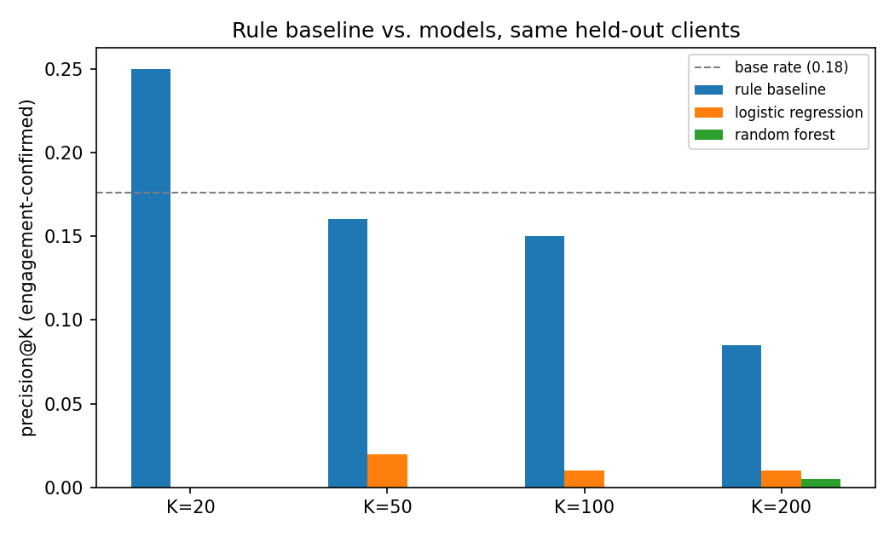
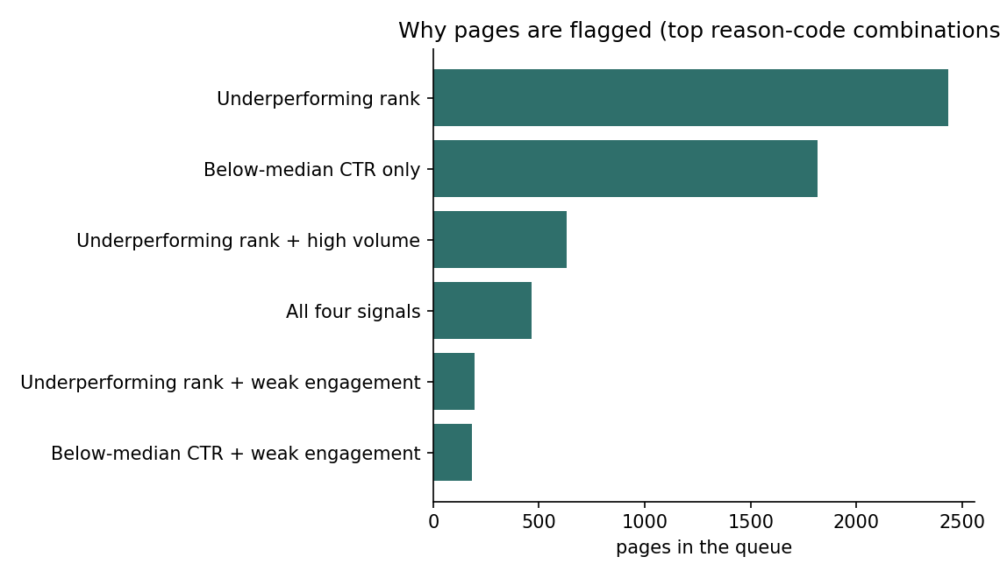
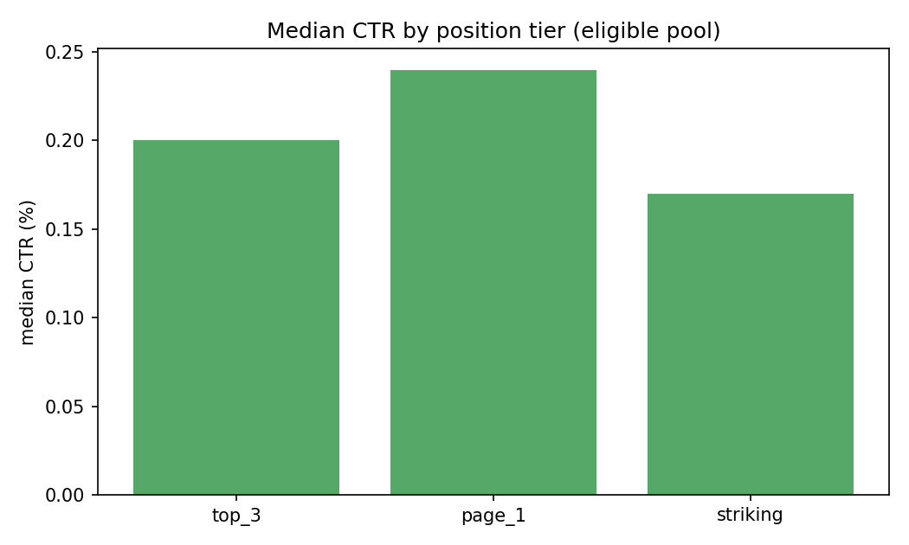

Abstract
Which already-visible pages should a content team review first to close a click-through gap, and can that decision be safely handed to a machine-learning model instead of a plain rule? Using FlyRank's anonymized 30,000-page starter export, 12,023 pages were visible enough to judge — at least 500 impressions in 90 days and a top-20 ranking — split so no single client's pages appeared in both training and test. A transparent rule (how far a page's click-through rate sits below its position tier's median, scaled by impression volume) was compared against a logistic regression and a random forest trained on the same twenty-five pre-outcome features, all scored on the same held-out clients. The rule won at every cutoff checked, while both models scored below what picking pages at random would give — their most confident picks were exactly the pages an independent engagement check is built to exclude. This queue is meant to set a content team's weekly review order, not to guarantee a click count, rewrite copy on its own, or judge who wrote a page.
The problem
A content lead opens the search console dashboard on a Monday morning. Forty of their pages rank in the top twenty for keywords they care about, but a chunk of them barely earn a click despite the good position. There's time to review three or four pages this week. Which ones?
Picking by gut feeling means falling back on whichever page was mentioned in last week's meeting. Picking by raw impressions rewards big pages regardless of whether they're actually underperforming. The question this project set out to answer: can a page's own metrics — without knowing anything about the writer, the topic, or this quarter's click-through rate result — reliably flag which pages are worth a look first, and is a fitted model needed to do that, or does a rule you can read in one sentence already do the job?
Data
The source is FlyRank's anonymized starter CSV: 30,000 content pieces, 44 columns,
pseudonymous content_id/client_id hashes — no client names,
URLs, or raw search queries anywhere. Metrics are trailing 90-day windows (impressions,
clicks, sessions); the export carries no absolute dates.
The eligible pool for this study is pages with at least 500 impressions in 90 days and a position between 1 and 20 — visible enough that a click-through problem is worth a content team's time to fix. That's 12,023 of the 30,000 pages (40%); the rest are either too low- volume to judge reliably or ranked too far down the results page to matter yet.
Excluded from every feature set, and checked for programmatically rather than taken on
faith: ctr and clicks_90d (the outcome itself), trend_direction/
trend_pct and the 30-day windows that build them (future and overlapping-window
leakage), and provider_used/model_used (marked non-features in
FlyRank's own data dictionary).
Methodology
Label
A page is an "opportunity" if its click-through rate sits below the median CTR of other pages in its own position tier (top 3 / page 1 / striking distance) — judged against fair peers, not the whole pool, since position alone moves CTR substantially.
The baseline rule
score = (tier median CTR − page CTR) × impressions, 90 days — read directly
as an estimated number of clicks a page is leaving on the table relative to its peers. Every
row also carries reason codes (a well-ranked page not converting clicks, high volume, or a
second signal — weak on-page engagement — pointing the same way), so a reviewer can see
why a page is on the list, not just its score.
Features
Twenty-five fields knowable before this quarter's CTR result: content metadata (word
count, age, freshness, intent) and prior traffic behavior (sessions, engagement, scroll
activity). Fields with real, patterned missingness got a has_<field> flag
before being filled — content type predicts which fields go missing, so filling blindly
would have quietly turned "is this a certain content type" into a feature.
Validation design
Every split in this project groups by client_id: a client's pages never
appear in both train and test, since pages from one client share a site, a CMS, and an
editorial team that a model could partly learn to recognize instead of learning from
content signal.
Leakage checks
Three checks, not one. First, the harness was verified by deliberately reintroducing
ctr as a feature — the AUC jumped from 0.79 to 0.99, confirming the test would
actually catch a real leak. Second, the final feature set was checked against every banned
field with a programmatic assertion, not a manual scan. Third, the evaluation metric itself
was audited and a real bug was found: the engagement-corroboration check originally compared
against a raw tier median that was exactly 0.0 for two of three tiers (since over half of
those rows never register engagement at all), making the check almost never fire. It was
fixed by comparing against the median of rows that actually measured engagement — which
changed the results below materially, for the better.
Results
Same 824 held-out pages across 7 clients neither model nor rule ever saw during fitting. Precision@K measures how many of the top-K ranked pages also show weak on-page engagement — an independent signal from CTR, used as a corroboration check rather than a ground-truth label, since none exists for this task.
| K | Rule baseline | Logistic regression | Random forest | Base rate |
|---|---|---|---|---|
| 20 | 0.250 | 0.000 | 0.000 | 0.176 |
| 50 | 0.160 | 0.020 | 0.000 | 0.176 |
| 100 | 0.150 | 0.010 | 0.000 | 0.176 |
| 200 | 0.085 | 0.010 | 0.005 | 0.176 |

This isn't a broken model: the random forest reaches 0.84 AUC recovering the CTR-gap label it was trained on. The mismatch is in what got optimized versus what got measured — both models' most-confident picks turned out to be pages with exactly zero recorded engagement, and the corroboration check is deliberately built to treat a zero as "not measured," not "confirmed weak." A model chasing the training label finds that pattern efficiently; the evaluation metric was built to distrust it.


Turning the audit on the source material
The same checks were run against two published findings in FlyRank's own March 2026 research paper. A random forest said to predict a composite "health score" ranked that score's own literal ingredients (position, impressions, scroll depth) as its top three predictors — an analog rebuilt from this project's data showed the fit collapsing from R² 0.99 to 0.64 the moment those ingredients were removed, meaning most of the reported "prediction" was the formula reflecting back at itself. A second finding reported 71% holdout accuracy for a growth/decline classifier with no base rate printed alongside it; replicated on an analog here, skill above the base rate came out near zero either way the data was split. Rigor applied to this project's own work has to apply to the source material too.
Limitations
- Cross-sectional, not causal. One 90-day snapshot. Nothing here shows that rewriting a title causes a CTR increase — only that some pages sit below their tier's typical CTR right now.
- The evaluation proxy is not ground truth. Weak engagement correlates with low CTR (roughly 0.3–0.5 by tier) but doesn't prove a page is broken — precision@K against it measures corroboration, not accuracy against reality.
- One export, not the full warehouse. 30,000 rows across a handful of clients; FlyRank's production data spans 341,701 pieces across 57 brands. This dataset carries no industry or vertical field, so cross-vertical differences can't be checked.
- Selection by design. The eligible pool already filters to visible, higher-traffic pages — anything thinner is invisible to this analysis on purpose.
- Anonymization limits. Pseudonymous IDs make it impossible to fully rule out that a client cluster reflects one brand's editorial habits rather than generalizable signal; the client-grouped split guards against overfitting to this but can't eliminate it.
Ranked recommendations
- Ship the rule-based queue, not the model — it wins the honest comparison above, and it's the version a content editor can read and argue with.
- Start with pages flagged as well-ranked but under-converting, at high volume — impression volume means a small CTR fix moves a meaningful number of real clicks.
- Treat the engagement-corroboration flag as a bonus, not a gate — only about one in six flagged pages carries it; the rest are still legitimate candidates.
- Never automate the rewrite itself, and never use this to judge a writer — the queue says where to look, not what to write, and CTR reflects more than writing quality.
- Re-check quarterly — tier medians, the corroboration flag's fire rate, and the queue's content-type mix should all be watched for drift as new data lands.
Reproducibility
Every number above comes from a notebook in the linked repository, runnable top to bottom. A fixed seed (42) is used everywhere a split or a model is involved.
- Data contract — label and feature-bucket definitions
- Feature vector & leakage check
- Baseline rule & top-20 review
- Signal audit — the engagement-median bug and fix
- Model training & comparison
- Validation audit — including the two research-paper findings above
- Action playbook — the deployable ranked queue
- Capstone notebook — this paper, end to end